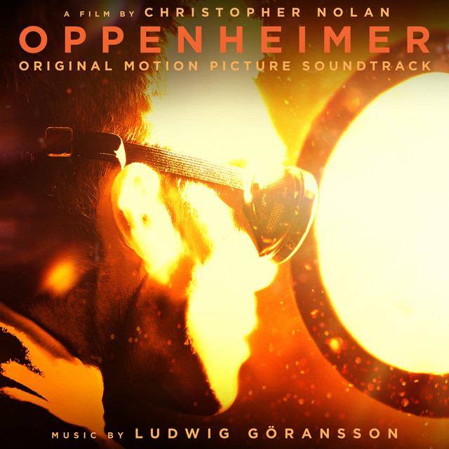

Vice President Kamala Harris holds campaign rally on MSU campus
With election day quickly approaching, Vice President and Democratic presidential candidate Kamala Harris made one last campaign stop in East Lansing in her fight to win the battleground state of Michigan. The campaign rally was held at Jenison Field House on MSU’s campus, filling the 6,000-seat arena…
We Watch It For The Music | Oppenheimer

A British university student stares longingly into a puddle, ripples of water scattered from the pouring rain. Something appears to be troubling him. Before we can ask what’s wrong, monstrous displays of fire and flames ignite the screen, waves of energy beyond our recognizable world. Faint strings build in anticipation, the loud drumming of feet warning…
Mourning the Muse You’ve Never Met | “Mary Boone” by Vampire Weekend
It can be said that an artist may never find peace of mind for as long as they are aware of their artistic ability. How can one possibly rest in the presence of art – the natural beauty of the world and humanity’s indomitable spirit constantly inspiring creation? Longingly gazing out a window, imagining untold stories…
I Spy With My Several Eyes | “Wall of Eyes” by The Smile
Do you ever feel like you’re being watched? You fidget in place as the hairs on your arm stand up, your shirt sitting funny on your back. Does my shirt look stupid? Maybe the tag is sticking out. Oh! Maybe my backpack is unzipped and something’s fallen out. No? Does my jacket have a stain on it? You look down. No. Then, what is it? Turning your head, you search for the observer…
I write about music.
Find more of my work listed on the Impact 89FM website.